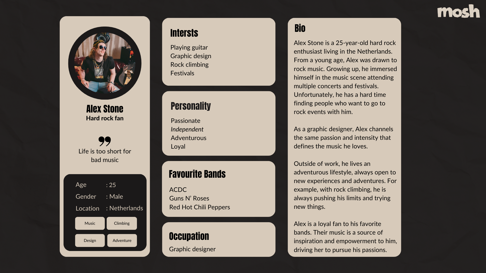
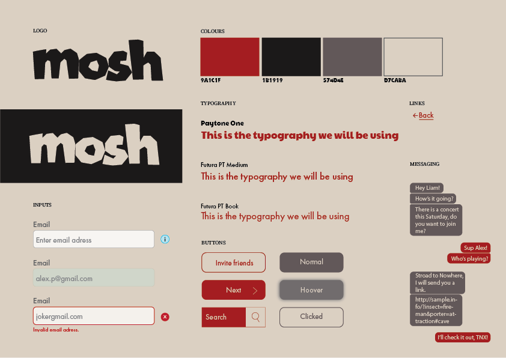
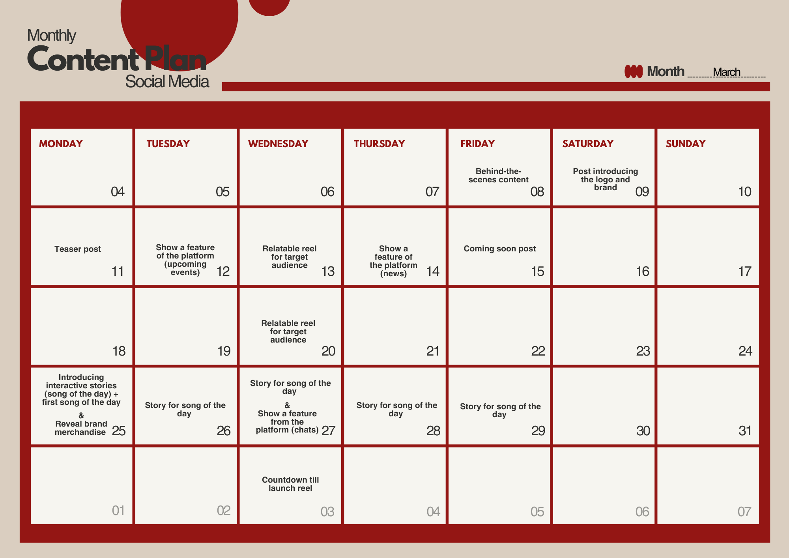
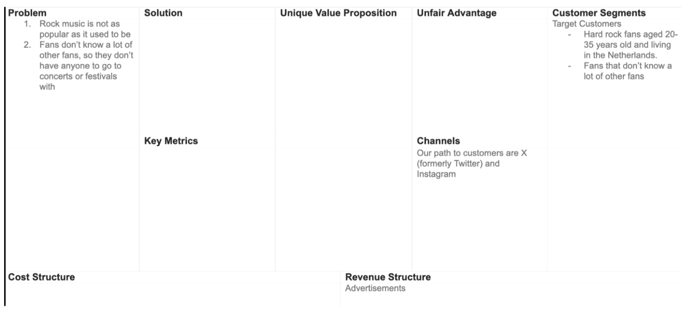
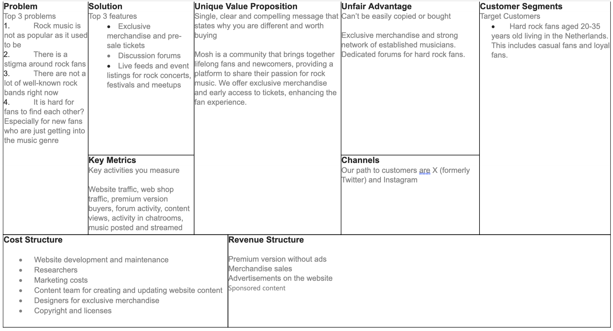
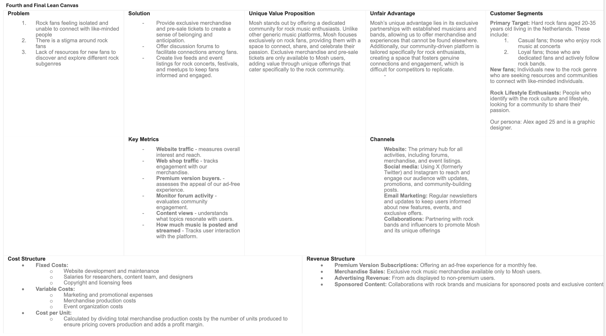

General Information
This branded website is publicly available at schreuderwouter.github.io/moshretake/
This website was created by…
- Finn Verbaan (ID: 221344)
- Hana Marija Rojnik (ID: 221460)
- Ilse van Proosdij (ID: 222486)
- Wouter Schreuder (ID: 211411)
Content
Wouter nog Make sure that you provide a link to the correct page within the website (en dit later weghalen)
| # | Student ID | Value | Name and link of content |
|---|---|---|---|
| 1. | 221344 | Production and corporate page | corporate page |
| 2. | 221460 | Styleguide, content and management | content and management |
| 3. | 222486 | Marketing and social media management | marketing |
| 4. | 211411 | Website landing page and 'about us' page | landing page and 'about us' |
Brand name: Mosh
Mosh originates from the term mosh pit, a mosh pit is an energetic, chaotic area typically found at rock concerts or music festivals. In a mosh pit the audience engages in aggressive dancing, often involving pushing, shoving, and jumping. It's a communal space where fans release energy and express their enthusiasm for the music through physical movement.
Logo
Brand Values
Belonging
Hard rock fans often feel a strong sense of community within their musical preferences. Mosh provides a space where fans can connect with others who share the same love for hard rock, creating a sense of belonging. The platform acts as a space where users feel understood and accepted.
Passion
Hard rock music is known for its intensity and emotional depth, which often sparks a passionate reaction from its fans. Mosh fuels this passion by offering a platform where fans can engage with people who share the same love for rock music.
Loyalty
Hard rock fans are often loyal to their favourite bands and the rock genre. Mosh plays into this loyalty by creating a dedicated community where members can stay updated with the latest news, releases, fellow fans, and events related to hard rock.
Friendship
Music is a great way to unite people, and hard rock is no exception. Mosh encourages the creation of friendships among fans who share similar tastes and interests. By providing interactive features like, a chat function, Mosh helps fans build lasting relationships based on their shared love of hard rock music.
Vision
In a world where the original rock fanbase is growing old, we believe that young fans deserve a place where they can connect with each other, so the community can thrive for another generation.
Brand Persona
Appendix
InterviewsProduction
Design Elements
Style guide
Justification of design choices
-
Colour scheme
- #9A1C1F This red colour evokes a sense of urgency, passion, and energy. It can be attention-grabbing and is often associated with action.…
- #1B1919 The black colour provides a strong contrast against lighter elements and can enhance readability and visual hierarchy.…
- #574D4E This gray colour provides a strong contrast against lighter elements and can enhance readability and visual hierarchy.…
- #D7CABA Beige tones are warm and comforting, often associated with reliability and neutrality. This colour can create a sense of trust and approachability.…
Font Choices (Paytone One, Futura PT Medium, Futura PT Book)
The font choices aim to create a cohesive visual identity while prioritizing readability and modern aesthetics. By using a combination of bold and lighter weights, the design ensures a harmonious balance between visual impact and legibility.
User interface patterns (e.g. grids, carousels, menu organizations etc.)
- The use of navigation patterns such as top navigation bar was curtail due to its familiarity to users. They already know how to navigate through it which is what makes it more accessible.
- Error messages we used also play a big role because they provide immediate feedback. If the user entered the wrong password, the error icon will provide feedback of what needs to be changed in order to move on.
- With grid view, we assure a visually appealing environment, optimise the space and consistency.
Credits
- this website was derived solely from the course provided template (buas-media-interactive/prj4-group-template)
- All images and icons were created by the team, within Canva.
Testing Report
We’ve now tested the website as follows: all members of the group have selected two friends or relatives (out of which 3 ended up aligning with our target audience) to take a look at the website and we asked them the following questions:
What is our website for?
Would you engage with this website? Why yes or no?
And finally, we asked them what they thought about the design choices individually, colors used, logo, etc.
Findings
Out of all the answers we’ve received we’ve valued the ones from the three people who aligned with our target audience the most. They are fans of hard rock between our targetted age.
They quickly understood what our website was about, because our values were clearly described. Two of them liked the look and feel of the website and one of them was not a fan, this person in particular said it looked a bit plain and would’ve liked to maybe see some images or a more “badass” font as they put it, to appeal to hard rock audiences more.
All three would engage with the website they said (most of the other participants who didn’t align with our target audience would not mostly since they don’t like hard rock enough). They were disappointed when they found out they couldn’t join to start chatting with other fans.
Possible improvements
A major improvement would be to spend more effort on the look and feel of the website, we should’ve had more collaboration between the person who created the look and feel and the one creating the website. As we heard in the tests, the website can be more appealing to the hard rock audience which we could’ve ensured by involving some of the participants in the early stage of development. Images, recognizable bands, or some news would’ve elevated the website much more.
We’ve implemented some feedback into the website already by making the background color a beige instead of just plain white and also by adding a big logo on top, and adjusting the writing style to a bit less neat writing so it doesn’t feel so official and formal.
Appendix
Solution interviewsMarketing
About our brand
In this time where rock music is less popular amongst the younger generations, Mosh provides a place where fans can interact with each other. The platform is especially meant for meeting other fans and making friends to go to rock events with. Our main values therefore are Belonging, passion, loyalty and friendship. The platform offers multiple different features such as a chat space, a news page, and an upcoming events page to stay up to date with everything going on in the rock community. In this communication plan, you will find the strategy for Mosh to reach its objectives. By focusing on a specific target audience and embracing a personally curated marketing campaign, Mosh will be able to build a relationship with its audience and create a community.
Target audience
The target audience for this campaign consists of rock fans aged 20 to 35 living in the Netherlands, who enjoy going to concerts and festivals. Mosh would like to engage people who do not have a lot of rock fans in their circle. Research conducted through interviews revealed that a large part of rock fans who would like to go to concerts or festivals do not know other fans who want to go with them. This is why Mosh will focus on this part of rock fans to help them find their people and create a community.
Objectives
Reach objective:
We want to reach 200 people on Instagram after posting for a month. By reaching this number of individuals we aim to increase brand awareness and draw attention to our online platform.
Affect objective:
We want to create brand awareness for Mosh and build customer relationships. To show a place where they can go and meet fellow fans, who share their passion for rock music.
Response objective:
We want 50% of our reached audience to translate into Instagram followers. From which half are actively engaging with our content through likes and comments. We want these active followers to turn into regular visitors of mosh.
Media Tactics
The platform chosen for this campaign is Instagram. Instagram has a number of 2 billion active users (Zote, 2024). Noticeably the largest age groups on Instagram are 18-24-year-olds (31,8%) and 25-34-year-olds (30,6%) (Statista, 2024). So as far as age demographics go, Instagram maintains a firm hold on both Gen Z and millennials. Because Instagram has so many active users, they have a lot of users with varying interests, meaning businesses of all industries can thrive on this platform. And with the help of hashtags, a brand can increase visibility on Instagram. It is also a great tool for engaging with the audience because people can share opinions and feedback daily (Kuligowski, 2024).
Context of our campaign
Our campaign is focused on spreading awareness about Mosh to rock fans, generating excitement about the launch of our platform, and familiarize people with our brand while conveying our brand values of belonging, passion, loyalty, and friendship. To achieve this goal we want to showcase that fans will find a community where they can connect and share their passion for rock music, by using Instagram as the social media platform to spread our content.
We planned to reach approximately two hundred people, encouraging them to visit our platform regularly and interact with other fans.
For our campaign, we made a total of 10 posts consisting of 4 reels and 6 normal posts next to these posts we also created 10 stories from which 3 were reposts of reels and the other 7 were part of the series ‘Song of the Day’.
Our reel content focused on being relatable to our target audience and increasing brand awareness, while our regular posts primarily highlighted the features of our platform.
All of our content was equally distributed in the time of a month, as displayed in our planning.
Learning points
During this campaign, we found several key learning points for our future strategies. One significant finding was the behavior of newly created accounts. We noticed that newly made accounts tend to get the most attention in the beginning. This was especially noticeable in the view count of the reels. The first reel received the highest number of views, whereas this number became less with each new reel.
Another important insight is for analyzing our engagement and the value of the professional features of Instagram. At first, our account was set up as a personal one, which limited our ability to access extra data about our posts. However, halfway through the project we noticed this and switched the account to a business account which allowed us to analyze the later posts more effectively.
Analyzing the data, we found that our last two posts, for which we have more detailed data, got 33 and 44 views, yet only gained 4 and 8 likes (Appendix 5,6). This means using likes to analyze how many people we reached. We can still analyze the success of the reels, as we can see the number of views they got (Appendix 7). And we can analyze the stories (Appendix 4), as they were posted after transitioning to a business account. Looking at the numbers our reels reached a larger audience compared to the regular posts. Especially the first reel reached a lot of, as previously mentioned, due to the exposure gained from creating a new account. Lastly, despite the lower number of views compared to regular posts, our story series ‘Song of the Day’ generated the most audience engagement. This suggests that there is a preference for interactive content in our audience.
Looking at the objectives set at the beginning of the project, they were a bit ambitious. The overall reach of reels is about 150 people, primarily through the success of the first video. However, this reach did not translate into a lot of engagement, because the average amount of likes per video remained around 10 (Appendix 1). Despite some mistakes with the professional account, we were still able to get insights from the last week and a half. Noting that in this time we reached a total of 49 accounts (Appendix 3). Unfortunately, we didn’t reach our objectives during this project.
In conclusion, to make sure our future campaigns will reach their objectives we will aim for diverse and consistent content at the beginning of the campaign. focussing on reels and interactive content to reach the most people and keep our audience engaged.
Future planning
In our future planning, we aim to maintain a more consistent posting schedule. Our goal is to have daily content, including stories, regular posts, and reels. Given the wider reach of reels, we'll prioritize creating more of them. In addition, we'll place a greater emphasis on creating interactive content to enhance audience engagement, continuing with the strategies we implemented towards the end of our campaign. This is why we have come to the following future planning.
Our content
Our PostsReels
Stories
Appendix
1. Instagram account engagement2. Instagram account reach
3. Instagram followers
4. Instagram post reach
5. Views per reel
References
Zote, J. (2024, 14 februari). Social media demographics to inform your 2024 strategy. Sprout Social.Statista. (2024, 21 maart). Instagram: distribution of global audiences 2024, by age group.
Kuligowski, K. (2024, 2 februari). 12 Reasons to Use Instagram for Your Business. business.com.
Management
First Lean canvas
Logical order of filling in the canvas:
Problems
- Rock music is not as popular as it used to be.
- There is a stigma around rock fans.
- There are not a lot of well-known rock bands right now.
- It is hard for fans to find each other, especially for new fans who are just getting into the music genre.
Customer Segments
Hard rock fans aged 20-35 years old living in the Netherlands. This includes casual fans and loyal fans. Casual fans are attracted by outdoor concerts and festivals, while loyal fans prefer bundled events with other relevant bands or experiences.
Unique value proposition
Mosh is a community platform that connects both lifelong fans and newcomers, offering a space to share their passion for rock music. Exclusive merchandise and early access to tickets are available only to Mosh users, enhancing the fan experience.
Solution
Exclusive merchandise and pre-sale tickets, discussion forums, live feeds and event listings for rock concerts, festivals, and meetups.
Unfair advantage
Mosh offers exclusive merchandise that can't be bought anywhere else and has forums dedicated specifically for hard rock fans. We also have a strong network of established musicians.
Revenue streams
- Premium version without ads
- Merchandise sales
- Advertisements on the website for non-premium users
- Sponsored content collaborations with rock brands
Cost structure
- Website development and maintenance
- Researchers
- Marketing costs
- Content team for creating and updating website content
- Designers for exclusive merchandise
- Copyright and licenses
Key metrics
- Website traffic
- Web shop traffic
- Premium version buyers
- Forum activity
- Content views
- Activity in chatrooms
- Music posted and streamed
Channels
Our primary path to customers is our website. We also use X (formerly Twitter), Instagram, and email marketing to reach our audience.
Second Lean Canvas
Third Lean Canvas
Fourth/Final Lean Canvas
Validation of Assumptions and Reflection on Choices Made
Validation Process: To ensure our solutions accurately address the problems identified, we conducted a series of interviews with our target audience, including both casual and loyal rock fans, as well as new enthusiasts.
Isolation and Connection Issues:
- Interview Insight: Many interviewees expressed that they often felt isolated and found it challenging to connect with other rock enthusiasts.
- Pivot: Based on this feedback, we enhanced our discussion forums and live feeds to create more opportunities for fans to interact and form connections.
Stigma around Rock fans:
- Interview Insight: Interviewees confirmed feeling stigmatized as rock fans, often feeling like the "elephant in the room."
- Pivot: To combat this stigma, we developed exclusive merchandise that rock fans can wear proudly, helping to build a positive identity and sense of community.
Lack of Resources for New Fans:
- Interview Insight: New fans reported difficulty in finding resources to explore different rock subgenres.
- Pivot: We created a section on our platform dedicated to new fans, offering curated playlists, band histories, and subgenre explorations.
Conclusions from Interviews:
- The need for a dedicated community was strongly validated by our interviewees, leading to a focus on features that facilitate interaction and support among fans.
- Stigma and isolation were common themes, informing our decision to provide exclusive, identity-affirming merchandise and community-building activities.
- The platform's educational resources for new fans were shaped directly by the feedback on the lack of accessible information about rock subgenres.
Implementation of Feedback
- Enhanced Community Features: We prioritized building robust discussion forums and live event feeds to foster connections.
- Exclusive Merchandise: Designed to help fans proudly display their affiliation, reducing feelings of stigma.
- Educational Resources: Added dedicated sections to help new fans explore and learn about rock music.
By systematically incorporating interview feedback, we refined our value proposition and business plan to better meet the needs of our target audience, ensuring Mosh stands out as a unique and valuable platform for rock music enthusiasts.